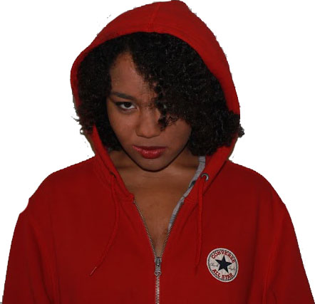

Hi, I’m not telling you my name, I don’t want to do this, I don’t want my picture on the website, what if they find me?!
I don’t trust the red hooded girl, every session she just sits there, staring at me! If you’re reading this I’m onto you. I’ll alert the authorities, stop looking at me!
Why doesn’t the girl next to me just eat that apple, what’s she planning to do to it?!
I don’t think Humphrey really hurt his head, I think he’s got a hidden camera under the bandage, why is he filming us?!
What if this isn’t really going on the website? What if it’s going straight to the FBI?! I’m not giving you any more information, let me go hoooooomeeee!!
Likes
Straw, Wood
Dislikes
Bricks
Georgie's Asessment
Drama queen, probably faking.
Humphrey
Hello, I’m Humphrey. I attend Modern Rhymes to help myself push through the trauma of an accident I suffered many years ago.
It’s alright, not everybody listens to you, the sessions sometimes trail off a bit… Nobody has really started their “road to recovery” yet, but it’s only been a few sessions I suppose…
Felix is a little mean… Pete doesn’t really know where he is… I kind of wish I went to a real psychiatrist now… Georgie isn’t really qualified.
I just want to be whole again.
Likes
Good listeners, Eggs
Dislikes
Walls, Poorly constructed sandwiches
Georgie's Asessment
How dare you call me unqualified? I’m the only one who listens to your god-awful ramblings without demanding a fee, you ungrateful bottom-feeder.
Rudy

This place sucks, the other guys are stupid, I shouldn’t even be here.
The only thing that’s even remotely fun is giving the weirdo with the pipe funny looks because it makes him insane.
Don’t get me started on that blonde control freak, sitting there giving me the evils because I don’t want to take part in the freak show going on around me.
My parents only sent me here because they hate me, they’re always trying to get rid of me. I have to go on a 4 mile walk through the forest every day to take my grandma a stupid picnic basket. SHE LIVES NEXT TO A SANDWICH SHOP.
Hi. Uhhhh… I’m Alison, and I’m not really sure what I’m supposed to write. I’ll ask Georgie…
She told me to write about why I go to Modern Rhymes. I don’t know what Modern Rhymes is. I’ll ask her again…
Ohhhh, Modern Rhymes is the thing where we all sit on the chairs! Well, I go there because… I can’t remember… I think I walked in one day and the place had air conditioning, so I just stayed.
It’s fine, it’s a bit boring. I’ve spoken to cats and playing cards. I preferred that to be honest.
Likes
Rabbits, Mushrooms
Dislikes
Queens, Cats with stupid faces
Georgie's Asessment
Either high, stupid, or both.
Clo
I’m Chlo, I’m only in this place because Georgie thinks I’m anorexic, I’m not! It’s just… I only eat apples… Since I was born, they’re all I’ve ever eaten. But I just can’t trust them anymore.
I don’t care about this place, it’s not like I ever get to talk anyway. There’s always shouting, and when there’s not it’s Georgie talking about herself.
It’s called a support group, but I don’t feel supported until I get home, where my seven housekeepers all take care of me.
Likes
Little people, tasty apples
Dislikes
Poison apples
Georgie's Asessment
Definitely anorexic. Also rude.
Felix
Hola, they call me Felix. Rest assure I would not be wasting my time with such insignificant activities had I not been threatened with Jail time. I shall share with you my tale.
They say I have kleptomania, I do not agree, I do not like these labels the blonde one uses.
I mean sure I swipe the occasional shoe, but who doesn’t?
As for this place, it’s no place for me. They whine, they cry, they scream, they shout! I may just go to jail instead. I believe the odds of survival are better for me there.
Likes
Boots, Sunglasses, Standing in front of doors for ten minutes whilst I decide if I want to walk through them or not
Dislikes
Water, Ogres
Georgie's Asessment
Full of himself, definitely a kleptomaniac, should be thankful I can tolerate his accent